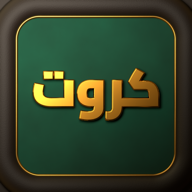

Terms of use
Last updated 20 November 2026
Kuroot is a card game for playing Tarneeb, Syrian 41, Lebanese 400 and Spades with friends and family. These are the rules for using it. By playing, you agree to them. They are written to be read.
In short: be decent to the people you play with. Coins and gold bars are for play inside the game and are never worth money. Abuse is not tolerated: a player who abuses others can be removed from the game.
Who we are
Kuroot is published by Alex Toumayan. For anything about these terms, write to kuroot.support@gmail.com.
Who can play
You must be at least 13 years old to play Kuroot. If you are under 18, play with the permission of a parent or guardian, who agrees to these terms for you.
How to treat other players
Kuroot is a family card night. The name you choose is seen by everyone at your table, and friends can write to each other. You agree not to use a name, send a message, or behave in a way that is:
- abusive, hateful, threatening or harassing towards anyone;
- sexual, obscene or violent;
- an attempt to pass yourself off as someone else, or as the game itself;
- spam, advertising, or an attempt to trick players out of anything;
- against the law.
There is no tolerance for objectionable content or for players who abuse others. Names and messages pass through a word filter. Any player can block another player, and can report a player or a message from inside the game. We look at reports within 24 hours, remove what breaks these rules, and remove the player responsible from the game where it is called for. We may do so without notice.
Playing fairly
The cards are shuffled fairly on our server and the shuffle is never adjusted for anyone. You agree not to cheat, not to work with an opponent against your own partner, not to use software that plays for you or alters the game, and not to interfere with the game or its servers.
Coins, gold bars and the things you own
Gold coins, gold bars, trophies, and the items you collect (decks, card backs, portraits, frames, things to throw, boxes) exist only inside Kuroot. They are a licence to use those things in the game, not property. They have no value in money. They cannot be exchanged for money or anything of value, sold, or passed to another player.
Coins are put up to sit at some tables and can be won or lost there. That is play with the game's own coins and nothing else: nothing in Kuroot can be cashed out.
Some boxes hold a random piece of an item. What each box can hold, and the chances, are shown in the game before you open or buy one.
Purchases
Packs of gold coins and gold bars are sold through the App Store and are charged by Apple, in your local currency, at the price shown before you pay. A pack is added to your player when the purchase is confirmed. Purchases are final and are not refunded by us, except where the law requires it; refunds are requested from Apple under Apple's own rules. If you delete your account, or it is removed for breaking these terms, what it held is lost and is not refunded.
Your account
You can play as a guest, or sign in with Apple so that your progress follows you to another phone. A guest's progress lives with that guest on that phone: if the app is deleted, it may be lost. You can delete your account, and everything it holds, at any time from inside the game: Profile, then Settings, then Delete my account.
Changes to the game
We may change the game, its prices and what it offers, add or remove features, and correct mistakes, including in a player's coins, bars or items where they were added in error. We may stop offering the game.
No guarantee
Kuroot is provided as it is. We work to keep it running and fair, but we do not promise that it will always be available or free of faults. To the extent the law allows, we are not liable for losses that come from using the game, and our total liability to you is limited to what you paid us in the twelve months before the claim. Nothing here takes away rights the law gives you that cannot be given up.
Apple
These terms are between you and us, not Apple. Apple is not responsible for the game or for supporting it. Your use of the app is also subject to the App Store's terms, including Apple's standard licence for apps.
Changes to these terms
If these terms change, the new version will be posted on this page with a new date. Playing after a change means you accept it.